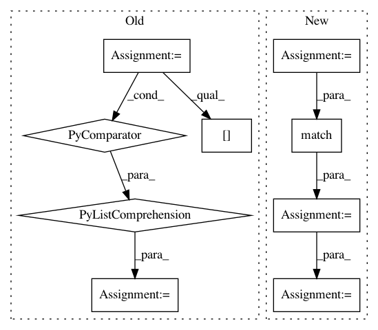

44682f54140e61f260878ad2d2703eecba91e1e9,ggplot/facets/locate.py,,locate_grid,#Any#Any#Any#Any#Any#,50
Before Change
// Special case of no facetting
data["PANEL"] = 1
else:
lookup = dict((row, i) for i, row in
enumerate(facet_vals.itertuples(index=False),
start=1))
data["PANEL"] = [lookup[t] for t in
data.loc[:, vars].itertuples(index=False)]
data.sort(columns="PANEL", inplace=True)
return data
After Change
// Special case of no facetting
data["PANEL"] = 1
else:
keys_x = list(facet_vals.loc[:, vars].itertuples(index=False))
keys_y = list(panels.loc[:, vars].itertuples(index=False))
data["PANEL"] = match(keys_x, keys_y, start=1)
// matching dtype
data["PANEL"] = pd.Categorical(data["PANEL"])
data["PANEL"].cat.reorder_levels(panels["PANEL"].cat.levels)
data.sort(columns="PANEL", inplace=True)
return data
In pattern: SUPERPATTERN
Frequency: 3
Non-data size: 9
Instances
Project Name: has2k1/plotnine
Commit Name: 44682f54140e61f260878ad2d2703eecba91e1e9
Time: 2015-04-20
Author: has2k1@gmail.com
File Name: ggplot/facets/locate.py
Class Name:
Method Name: locate_grid
Project Name: has2k1/plotnine
Commit Name: 44682f54140e61f260878ad2d2703eecba91e1e9
Time: 2015-04-20
Author: has2k1@gmail.com
File Name: ggplot/facets/locate.py
Class Name:
Method Name: locate_wrap
Project Name: tgsmith61591/pmdarima
Commit Name: 942f284052b22214d830c1bc2c8de03bffaa8d07
Time: 2020-02-18
Author: aaronreidsmith@gmail.com
File Name: build_tools/azure/render_meta.py
Class Name:
Method Name: